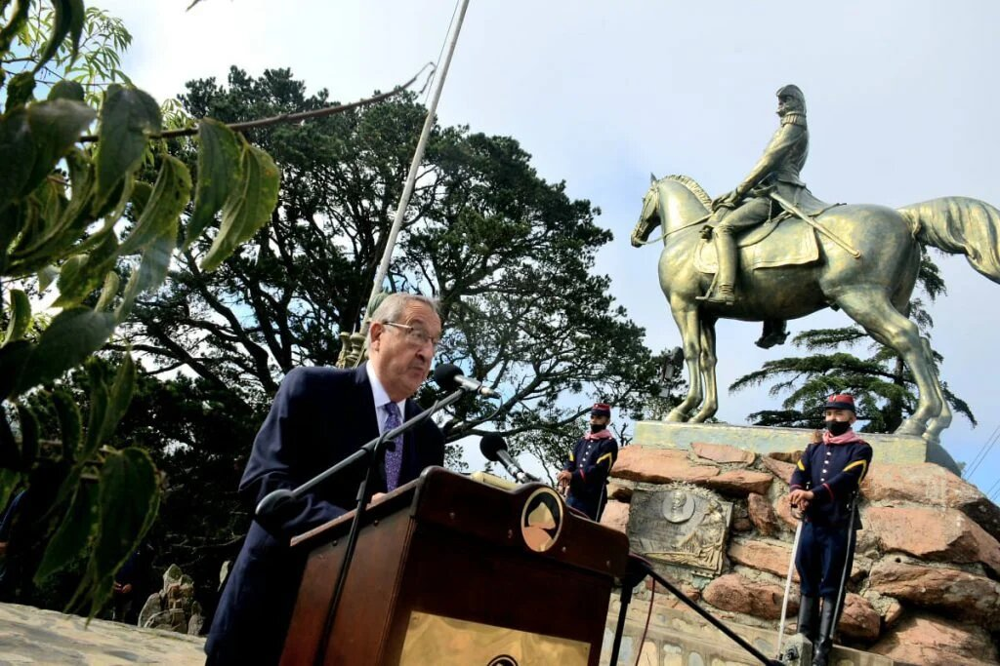

Tandil
En la cima del Parque Independencia, al pie del monumento al Brigadier General Martín Rodriguez, se celebró un nuevo aniversario, el 198vo, de la fundación de Tandil. Hace un año, con motivo de la pandemia por el coronavirus Covid-19 y en pleno aislamiento social, se había suspendido el tradicional acto. En la ocasión, con protocolo mediante y un acotado número de participantes, se retomó lo que habitualmente se lleva adelante.
El único orador del acto fue el intendente Lunghi, que luego de izar la bandera junto a las autoridades presentes, comenzó su alocución. “La pandemia nos privó el año pasado, por una de esas duras excepciones que nos presenta la historia, de compartir la ceremonia del aniversario de Tandil al pie del monumento de su fundador. Algo nos faltó entonces y algo hoy, con las limitaciones propias del caso, volvimos a recuperar este presente”. El jefe comunal planteó que “la realidad es que en el devenir hacia el Bicentenario, Tandil afronta su tragedia más dolorosa. Nos duele cada vida que perdemos, nos duelen los embates a nuestra economía, nos duele no poder dar las respuestas en los tiempos de vacunación que quisiéramos y que no dependen de nosotros. Nos duele todo , pero aquí estamos. Cada fotografía del pasado reciente va con nosotros, en cada paso que damos”.
A lo largo de su discurso el intendente hizo incapié sobre estos temas:
Lunghi intentó mostrarse esperanzador sobre lo que viene para Tandil y su comunidad: “Al presente le doy el nombre de la esperanza. Aunque parezca un contrasentido, aunque el Covid-19 se haya instalado en la conciencia y en el registro de la vida cotidiana como una verdadera desgracia, es el presente, aún golpeado, maltrecho, dolorido y rasgado por las pérdidas, es también una esperanza”.
“Cuando se habla del futuro y se lo asocia a la esperanza es porque verdaderamente estamos llevando la cuestiones al plano de la distancia, que al estar lejos, necesita del optimismo como suele invocarse desde una tribuna. Yo quiero hablar de la esperanza en tiempo presente, de aquí y ahora, existen sobradas razones para hacerlo. Tengo esperanza porque en medio de una pandemia que nos devastó, que arrasó nuestra economía y que cambió nuestras vidas para siempre, nuestra ciudad se reveló así misma para recibir la tormenta. Tengo esperanza en el presente porque nadie se dio por vencido, ni aún vencido. Porque el nombre Tandil trascendió a la marca Tandil. Es decir que la importancia de la historia sostuvo con su combustible a lo que es Tandil”.
En otro tramo de su discurso, el intendente habló del emprendedorismo como una salida a la crisis. “Mientras que el Covid-19 no da tregua, tampoco Tandil da tregua en su formidable capacidad emprendedora . Su polea productiva, su gestión para producir e invertir. Lo vemos a diario en la construcción, en el comercio que vuelve a tomar impulso. También en la actividad agrícola-ganadera, en la industria, en el turismo que logró sobrevivir a uno de sus años más negros. Tengo esperanzas porque crecen los centros comerciales fuera de las cuatro avenidas como también crecen las obras en los paseos comerciales del viejo centro de la ciudad. Este desarrollo lo vemos a diario en la primera construcción de un edificio inteligente, de Globant, que ha invertido 10 millones de dólares en Tandil. Lo vemos en el Parque Industria cuando estamos a días de comenzar la radicación de una nueva industria, Bioceres, con una inversión de 7 millones de dólares. Tengo esperanza porque este año, se presentaron 9 proyectos solicitando radicación en el Parque Industrial”, destacó.
